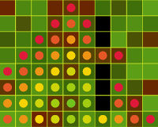
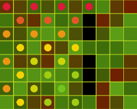
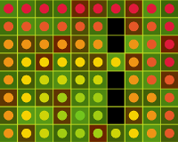
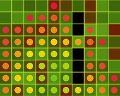
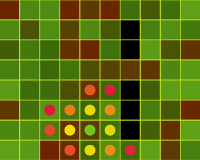
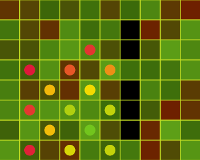
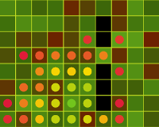

Range Finding
This article describes how to find the points inside a grid within a range. It uses many of the same concepts as Path Finding , so make sure to read that first first.
The simplest way to find all points within a certain range is to do a LINQ query such as the following:
var pointsInRange = grid.Points.Where(p => RectPoint.ManhattanNorm(center - p) < radius);
This finds all the points within a given radius using the ManhattanNorm. This works well provided that:
- The grid is small.
- You don't want to use a weighted cost.
- You don't care about accessibility (all points are reachable).
If any of those conditions don't hold, you need to use one of the range finding methods:
- GetPointsInRange<TPoint>(IGrid<TPoint>, TPoint, Func<TPoint, IEnumerable<TPoint>>, Func<TPoint, bool>, Func<TPoint, TPoint, float>, float)
- GetPointsInRange<TPoint>(IGrid<TPoint>, TPoint, Func<TPoint, IEnumerable<TPoint>>, Func<TPoint, bool>, Func<TPoint, TPoint, int>, int)
- GetPointsInRangeCost<TPoint>(IGrid<TPoint>, TPoint, Func<TPoint, IEnumerable<TPoint>>, Func<TPoint, bool>, Func<TPoint, TPoint, float>, float)
- GetPointsInRangeCost<TPoint>(IGrid<TPoint>, TPoint, Func<TPoint, IEnumerable<TPoint>>, Func<TPoint, bool>, Func<TPoint, TPoint, int>, int)
Here is the function definition of the first:
public static IEnumerable<TPoint> GetPointsInRange<TPoint>(
IGrid<TPoint> grid,
TPoint start,
Func<TPoint, IEnumerable<TPoint>> getConnectedPoints,
Func<TPoint, bool> isAccessible,
Func<TPoint, TPoint, float> getCellMoveCost,
float moveRange)
And a typical call:
public static IEnumerable<TPoint> GetPointsInRange<TPoint>(
grid,
start,
RectPoint.GetOrthogonalNeighbors,
p => true,
(p, q) => 1,
3)
The function returns a list of points, in the case above all points that are within 3 units of the start cell. Most arguments and steps are exactly the same as for path finding. Here is a summary of the steps:
Which of the four overloads should you use? The first two return only a list of points. The last two returns a dictionary containing the points as keys and the cost of each point as that points value. Use one of these if you also need the costs. The difference between the overloads for each pair is whether the cost is measured as a float or integer. If you have an integer cost, using that version is slightly faster.
Calling GetPointsInRange
- Implement a cell that supports the necessary functionality for the type of range-finding you want to do.
- Work out what types all your parameters should be. These are the same as for path finding, except for the range parameter (which can either be an int or float, depending on whether your distance metric uses ints or floats).
- Write a method or lambda expression to decide whether a cell is accessible or not.
- Write a lambda expression or method for determining the true cost of reaching two points if they are neighbors. Since there is no heuristic cost involved with range finding, you need not worry about that. As with path finding, you get different results depending on the distance metric and your neighbor setup. Below is an example for some of the different options. (See Path Finding for an explanation of the costs.)
Grid Distance
| Orthogonal | Diagonal | Orthogonal and Diagonal |
|---|---|---|
|  |  |  |
Euclidean Distance
| Orthogonal | Diagonal | Orthogonal and Diagonal |
|---|---|---|
 |
 |
Weighted Costs
| Orthogonal | Diagonal | Orthogonal and Diagonal |
|---|---|---|
|  |  |  |